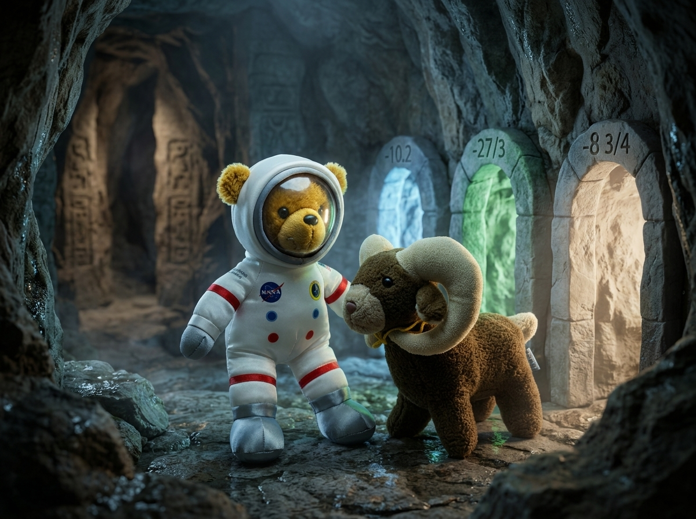

The Subterranean Labyrinth
Being the Wholesome Account of Space Bear & Rama Lama Navigating Rational Depths to Reach Daylight
Chapter I — The Inscribed Archways
Deep beneath the jagged crests of the Whispering Crags, an exploratory expedition met with an unexpected turn of fortune. Space Bear, a careful astronaut teddy bear in his white flight suit, and Rama Lama, his wise plush companion with soft brown fur, a yellow neck cord, and cream-colored ram horns, had been taking cave depth measurements when a sudden rockslide blocked the entrance.
Dust settled slowly in the dim subterranean air. Space Bear raised his flight suit lantern, illuminating an ancient stone tablet embedded in the cavern wall. Carved into the granite were three tunnel archways, alongside a clear rule of ascent:
To ascend toward daylight, every step through the maze must follow paths of strictly increasing depth values (from least to greatest).
Depths range from −10.5 fathoms in the deep abyss up to +10.0 fathoms at the sunlit surface!
"Observe, Rama Lama," Space Bear said calmly, double-checking his wrist telemetry computer. "We begin at a depth marking of −10.2. At each cavern junction, three passages open before us. Some passages display negative improper fractions, others display negative decimals or absolute values. To choose the correct path that leads upward toward the sun, we must convert each marking into a common representation and pick the passage with the greatest value!"
Rama Lama nodded wisely, his cream-colored horns catching the lantern glow. "Let us proceed methodically, Space Bear. I shall convert the fractions!"

At the first junction, standing at −10.2, they faced three archways: Passage A marked −10.8, Passage B marked −27/3, and Passage C marked −11.5.
Space Bear calculated: "−27/3 simplifies to −9.0. On our number line, −9.0 lies to the right of −10.2! Thus, −27/3 (−9.0) is greater than −10.2!"
They stepped bravely into Passage B (−27/3).
Chapter II — Through the Subterranean Tunnels
The cavern sloped gently upward. At the second junction, three new choices faced them: −29/3 (−9.666...), −8¾ (−8.75), and −10.1.
Rama Lama examined the mixed fraction −8¾. "Converting ¾ to a decimal gives 0.75, so −8¾ = −8.75. Because −8.75 lies closer to zero than −9.0, it has a greater value! This passage brings us higher toward the surface!" Together, they stepped through −8¾.
The maze continued with rigorous precision. At each cavern intersection, Space Bear and Rama Lama systematically converted fractions and decimals to compare their rational values:
• Step 3: From −8.75 (−8¾), they chose the decimal tunnel −6.85 (since −6.85 > −8.75).
• Step 4: From −6.85, they chose the improper fraction −19/4 (converting to −4.75, since −4.75 > −6.85).
• Step 5: At the fifth junction, they encountered an absolute value: |-0.25|.
"An absolute value bracket!" noted Space Bear. "Absolute value measures distance from zero without regard to sign, so |-0.25| = +0.25. Since positive +0.25 is greater than negative −4.75, this tunnel crosses into positive territory!"
They ventured forward through |-0.25| (+0.25) and continued ascending:
• Step 6: From +0.25, they chose improper fraction 7/5 (converting to +1.40 > +0.25).
• Step 7: From +1.40, they selected |-5.2| (absolute value yields +5.20 > +1.40).
• Step 8: From +5.20, they chose mixed fraction 7½ (converting to +7.50 > +5.20).
• Step 9: From +7.50, they selected improper fraction 19/2 (simplifying to +9.50 > +7.50).
−10.2 < −²⁷/₃ < −8¾ < −6.85 < −¹⁹/₄ < |-0.25| < ⁷/₅ < |-5.2| < 7½ < ¹⁹/₂ < |-10|
Chapter III — Emergence into Daylight
Ahead of them, a golden shaft of warm sunlight streamed through a high cavern arch. Etched upon the final archway was the grand master depth marker: |-10|.
"The absolute value of −10 is +10.0!" declared Rama Lama joyfully. "The highest depth level of the entire mountain!"
Space Bear and Rama Lama took their final step through the archway, emerging out of the dark cavern mouth into the crisp, pine-scented morning air of the Whispering Crags.
"Hooray! They made it!" shouted cheerful voices.
Cloud, the fluffy tan plush companion with his turquoise pendant necklace, and Sharky, the grey knit plush shark, came bounding down the rocky knoll with ecstatic cheers! They threw their arms wide in joyful celebration, greeting Space Bear and Rama Lama with warm hugs and high-fivers.
"We saw the rockslide from the meadow and were so worried!" cheered Cloud. "How did you navigate through the pitch-black tunnels?"
Space Bear adjusted his helmet with a proud smile, while Rama Lama beamed beside him. "With conversion and comparison! By turning every fraction, decimal, and absolute value into a common decimal format, we picked the greatest path at every turn!"